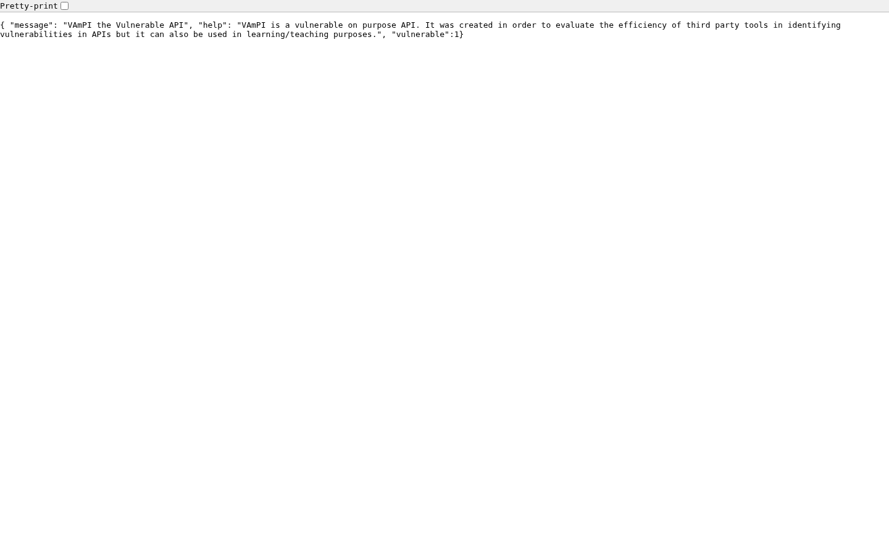
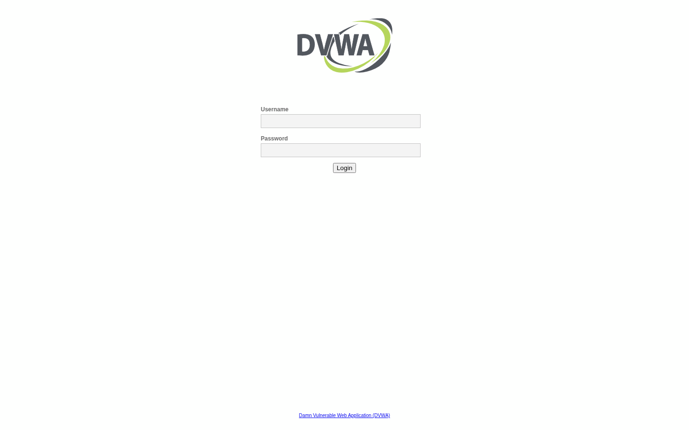
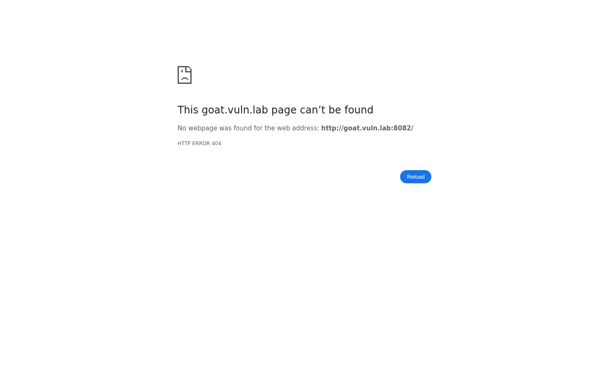
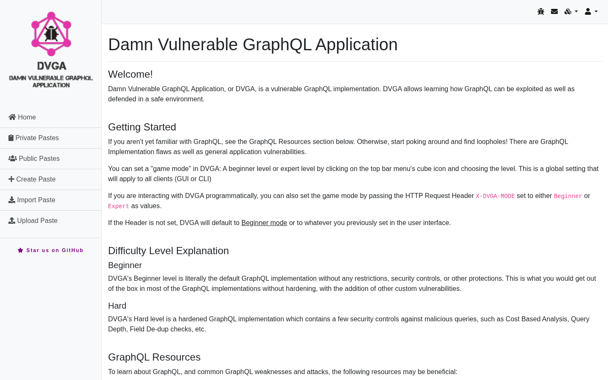
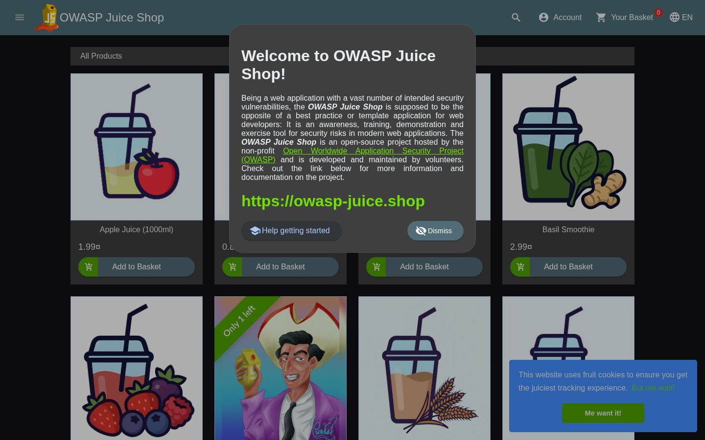

JSIntel Screenshots
7 screenshot(s) · 3 distinct visual cluster(s)
Cluster 0 — 5 host(s)

http://api.vuln.lab:5001/
HTTP 200 · Werkzeug/2.2.3 Python/3.11.15

http://dvwa.vuln.lab:8081/
HTTP 200
Login :: Damn Vulnerable Web Application (DVWA)

http://goat.vuln.lab:8082/
HTTP 404
http://goat.vuln.lab:9090/
HTTP 404
http://shop.vuln.lab:80/
HTTP 200 · SimpleHTTP/0.6 Python/3.14.7
● high-severity finding on host
Cluster 1 — 1 host(s) · “Damn Vulnerable GraphQL Application”

http://graphql.vuln.lab:5013/
HTTP 200
Damn Vulnerable GraphQL Application
Cluster 2 — 1 host(s) · “OWASP Juice Shop”

http://shop.vuln.lab:3000/
HTTP 200
● high-severity finding on host
OWASP Juice Shop